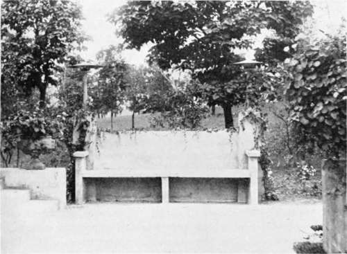

Embellishments. Part 8
Description
This section is from the book "Landscape Gardening", by Andrew Jackson Downing. Also available from Amazon: Landscape Gardening.
Embellishments. Part 8
Though a conservatory is often made an expensive luxury, attached only to the better class of residences, there is no reason why cottages of more humble character should not have the same source of enjoyment on a more moderate scale. A small greenhouse, or plant cabinet, as it is sometimes called, eight or ten feet square, communicating with the parlor, and constructed in a simple style, may be erected and kept up in such a manner, as to be a source of much pleasure, for a comparatively trifling sum; and we hope soon to see in this country, where the comforts of life are more equally distributed than in any other, the taste for enjoyments of this kind extending itself with the means for realizing them, into every portion of the northern and middle states.
Open and covered seats, of various descriptions, are among the most convenient and useful decorations for the pleasure grounds of a country residence. Situated in portions of the lawn or park, somewhat distant from the house, they offer an agreeable place for rest or repose. If there are certain points from which are obtained agreeable prospects or extensive views of the surrounding country, a seat, by designating those points, and by affording us a convenient mode of enjoying them, has a double recommendation to our minds.
Open and covered seats are of two distinct kinds; one architectural, or formed after artist-like designs, of stone or wood, in Grecian, Gothic, or other forms; which may, if they are intended to produce an elegant effect, have vases on pedestals as accompaniments; the other, rustic, as they are called, which are formed out of trunks and branches of trees, roots, etc., in their natural forms.
There are particular sites where each of these kinds of seats, or structures, is, in good taste, alone admissible. In the proximity of elegant and decorated buildings where all around has a polished air, it would evidently be doing violence to our feelings and sense of propriety to admit many rustic seats and structures of any kind; but architectural decorations and architectural seats are there correctly introduced. For the same reason, also, as we have already suggested, that the sculptured forms of vases, etc., would be out of keeping in scenes where nature is predominant (as the distant wooded parts or walks of a residence), architectural, or, in other words, highly artificial seats, would not be in character: but rustic seats and structures, which, from the nature of the materials employed and the simple manner of their construction, appear but one remove from natural forms, are felt at once to be in unison with the surrounding objects. Again, the mural and highly artistical vase and statue, most properly accompany the beautiful landscape garden; while rustic baskets, or vases, arc the most fitting decorations of the picturesque landscape garden.
Fig. 28. A Rustic Seat of Cement.
The simplest variety of covered architectural seat is the latticed arbor for vines of various descriptions, with the seat underneath the canopy of foliage; this may with more propriety be introduced in various parts of the grounds than any other of its class, as the luxuriance and natural gracefulness of the foliage which covers the arbor, in a great measure destroys or overpowers the expression of its original form. Lattice arbors, however, neatly formed of rough poles and posts, are much more picturesque and suitable for wilder portions of the scenery.
The temple and the pavilion are highly finished forms of covered seats, which are occasionally introduced in splendid places, where classic architecture prevails.
We consider rustic seats and structures as likely to be much preferred in the villa and cottage residences of the country. They have the merit of being tasteful and picturesque in their appearance, and are easily constructed by the amateur, at comparatively little or no expense. There is scarcely a prettier or more pleasant object for the termination of a long walk in the pleasure-grounds or park, than a neatly thatched structure of rustic work, with its seat for repose, and a view of the landscape beyond. On finding such an object, we are never tempted to think that there has been a lavish expenditure to serve a trifling purpose, but are gratified to see the exercise of taste and ingenuity, which completely answers the end in view.
A prospect tower is a most desirable and pleasant structure in certain residences. Where the view is comparatively limited from the grounds, on account of their surface being level, or nearly so, it often happens that the spectator, by being raised some twenty-five or thirty feet above the surface, finds himself in a totally different position, whence a charming bird's-eye view of the surrounding country is obtained.
Those of our readers who may have visited the delightful garden and grounds of M. Parmentier, near Brooklyn, some half a dozen years since, during the life-time of that amiable and zealous amateur of horticulture, will readily remember the rustic prospect-arbor, or tower which was situated at the extremity of his place. It was one of the first pieces of rustic work of any size and displaying any ingenuity, that we remember to have seen here; and from its summit, though the garden walks afforded no prospect, a beautiful reach of the neighborhood for many miles was enjoyed.
On a ferine ornee, where the proprietor desires to give a picturesque appearance to the different appendages of the place, rustic work offers an easy and convenient method of attaining this end. The dairy is sometimes made a detached building, and in this country it may be built of logs in a tasteful manner with a thatched roof; the interior being studded, lathed, and plastered in the usual way. Or the ice-house, which generally shows but a rough gable and ridge roof rising out of the ground, might be covered with a neat structure in rustic work, overgrown with vines, which would give it a pleasing or picturesque air, instead of leaving it, as at present, an unsightly object which we are anxious to conceal.
Continue to: